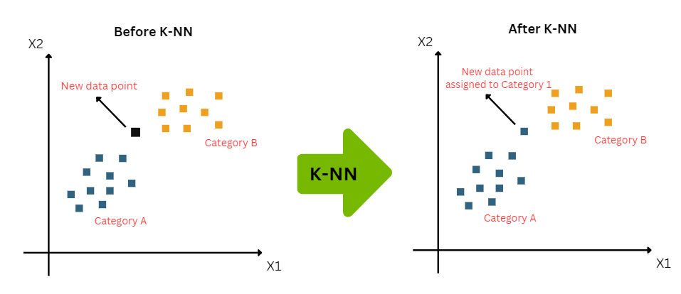

k-Nearest Neighbors (kNN)
Principe (kNN)
Le kNN est un algorithme de classification supervisée basé sur la proximité des exemples dans l’espace des caractéristiques. Pour une observation \(x\), on recherche les \(k\) voisins les plus proches selon une distance (souvent euclidienne) :
La classe prédite est la plus fréquente parmi les \(k\) voisins :
Avantages : simple, non paramétrique, efficace pour les petits jeux de données.
Limites : sensible à l’échelle des variables, coûteux pour de grands jeux de données.
Illustration (kNN)
{kind=link}
Exemple illustré (kNN)
Supposons un jeu de données avec trois points \(A=(1,2)\), \(B=(2,3)\), \(C=(4,2)\) et une nouvelle observation \(X=(2,2)\). Pour \(k=2\), les deux plus proches voisins de \(X\) sont \(A\) et \(B\). Si \(A\) est de classe 0 et \(B\) de classe 1, la classe prédite sera la plus fréquente parmi ces deux voisins.
Pour aller plus loin (kNN)
Documentation scikit-learn : https://scikit-learn.org/stable/modules/neighbors.html
Cours OpenClassrooms : https://openclassrooms.com/fr/courses/4425111-initiez-vous-au-machine-learning/5028281-classifiez-avec-les-k-plus-proches-voisins-knn